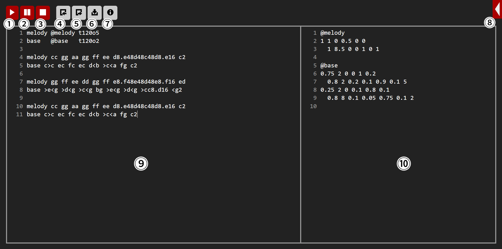

学習/画面の見方

- 再生ボタン。MMLで記述された音楽を再生します。
- 一時停止ボタン。再生中の音楽を一時的に停止します。MMLに変更を加えず、続けて再生ボタンを押すと停止した時点から再生されます。
- 停止ボタン。再生中・一時停止中の音楽を最初に戻します。
- インポートボタン。IAM.mml専用形式のMMLをインポートし、コードエリアを上書きします。
- エクスポートボタン。記述されたMMLをIAM.mml専用形式のMMLにエクスポートします。
- ダウンロードボタン。MMLで記述された音楽をWAVEファイルにビルドしてダウンロードします。
- 情報ボタン。IAM.mml Docsを開きます。
- メッセージボックス。主にエラー文を表示するために用いられます。
- 楽譜定義コードエリア。ここに楽譜を記述します。
- 音源定義コードエリア。ここに音源を記述します。